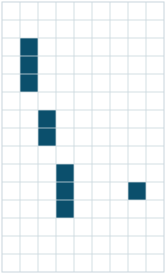
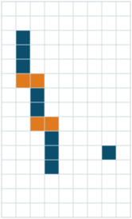

Pixel digi morphing for Phase 2 in the Alpaka clusterizer
IIHE Tracker DPG meeting · 27 October 2026
Chirayu Gupta
Vrije Universiteit Brussel (IIHE)

4 clusters
→

1 track + 1 pixel
IIHE Tracker DPG meeting · 27 October 2026
Chirayu Gupta
Vrije Universiteit Brussel (IIHE)


Broken clusters from degraded charge collection
Tracker DPG workshop, 14–16 Oct 2026

J. Schulz, HLT tracking, slide 4
Phase 2 will need the same tool; the Alpaka Phase-2 path had none
Three sizes, all bigger than a Phase-1 module

N. Bartosik, geometry, Tracker DPG workshop, slide 12 (T40)
| Module | rows × cols | pixels | 2 bitmaps |
|---|---|---|---|
| Phase 1 (fixed) | 160 × 416 | 67k | 16.6 KB |
| Phase 2, measured in the D128 geometry | |||
| TBPX L1, 1 chip | 672 × 216 | 145k | 36 KB |
| dual, 2 chips | 672 × 434 | 292k | 73 KB |
| quad, 4 chips | 1354 × 434 | 588k | 149 KB |
The module size has to be a run-time input
Morphing off: nothing changes
Phase-1 analogue: “count difference between old & new version” (#49991)

Stock config on the same 100 events, all IT modules; branch vs pristine CMSSW_20_1_X_2026-10-20-2300
| events identical | 100 / 100 |
| digis compared (cluster index, charge, module) | 56 142 094 |
| GPU clusters vs 8-neighbour reference | 0 modules differ |
| morphing on: clusters changed outside L1 | 0 |
Default off = master, bit for bit
TBPX L1, GPU, same four panels as the Phase-1 validation

| without | with | |
|---|---|---|
| clusters | 927 589 | 897 298 |
| mean size (pixels) | 5.70 | 5.89 |
Broken tracks in TBPX L1 are rejoined


GPU recovered = boxes, CPU recovered = crosses: same pixels here
GPU vs the legacy CPU SiPixelDigiMorphing and vs an exact reference

Strips give exactly the whole-module answer, in every module
CPU artefacts or the deliberate Phase-1 row-edge rule; 0 elsewhere

TBPX L1, GPU and CPU morphing agree

real + recovered digis per module

clusters: 927 589 → 897 298 (GPU), 897 990 (CPU)
The algorithm, not the port: CPU and GPU agree

TBPX L1, true pixel aspect


pixels per cluster and size along y, before and after
GPU recovers more: the CPU misses its own chunk edges